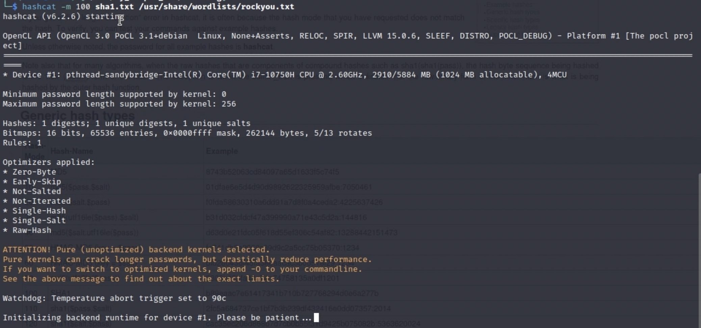

Cracking Passwords with Hashcat (continued)

So in this blog, this is just a continuation of the last blog and its going to be pretty short, but I just wanted to go over the test case on different hashing functions. So to recap, I have this hash that I want to find out the source string that this hash comes from. Now first I want to know what mode I should use in hashcat. Looking at the hash, I can tell that its 40 hex characters which probably tells me its a sha-1 hashing function and my theory remains correct as I looked at the website and I saw I should use the sha-1 mode (100) for this type of hash
Knowing this information, I am going to run the command hashcat again like last blog, however this time instead of using the 0 mode, since we are dealing with a sha-1 hash, I am going to use the 100 mode
So after some time, it revealed that the password is hello! Now if I were to come across different hashes that were hased with different hash functions, the process would stay pretty much the same. I just use hashcat and find out what mode I should use for the specific type of hash that im dealing with. Then I input the file that contains the hash and then input the file that I want to compare commonly use passwords and then in a matter of time I would get the hasH! Also, notice I input the file that contains the hash and not just the hash itself. This is because I can put multiple hashes into the same file and then hashcat would go through the whole process for each hash inside the file!